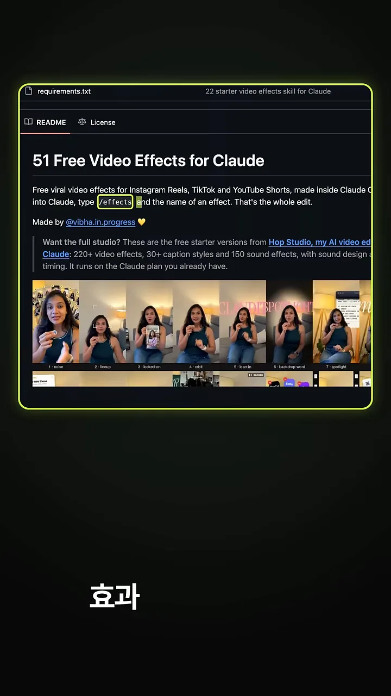
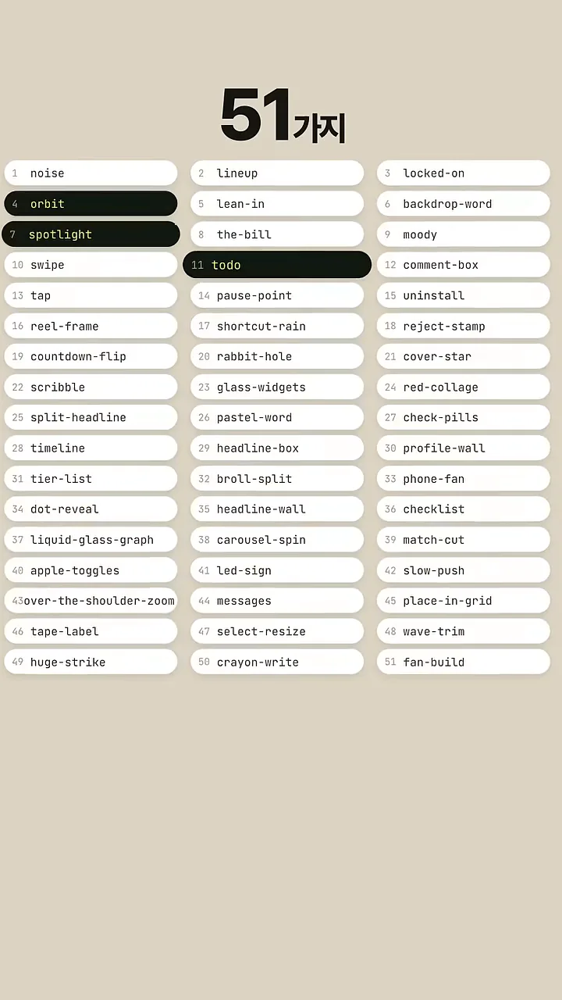
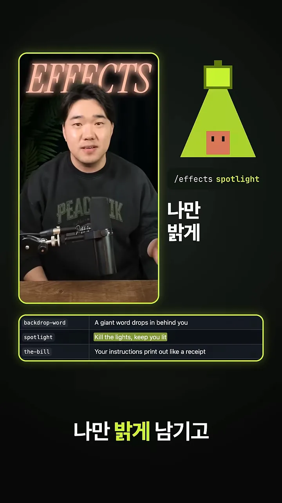
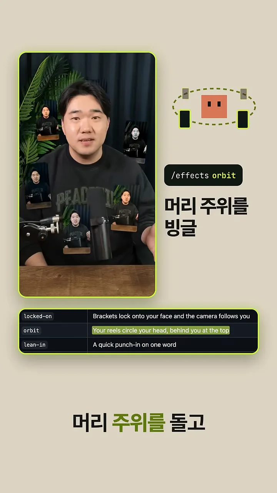
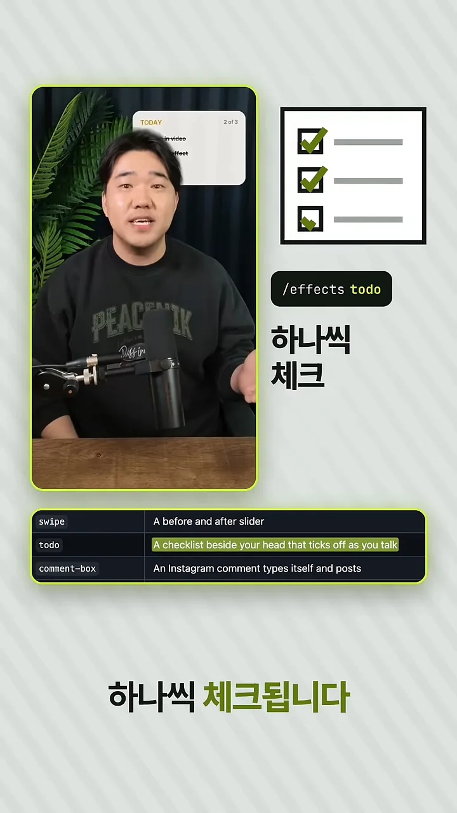
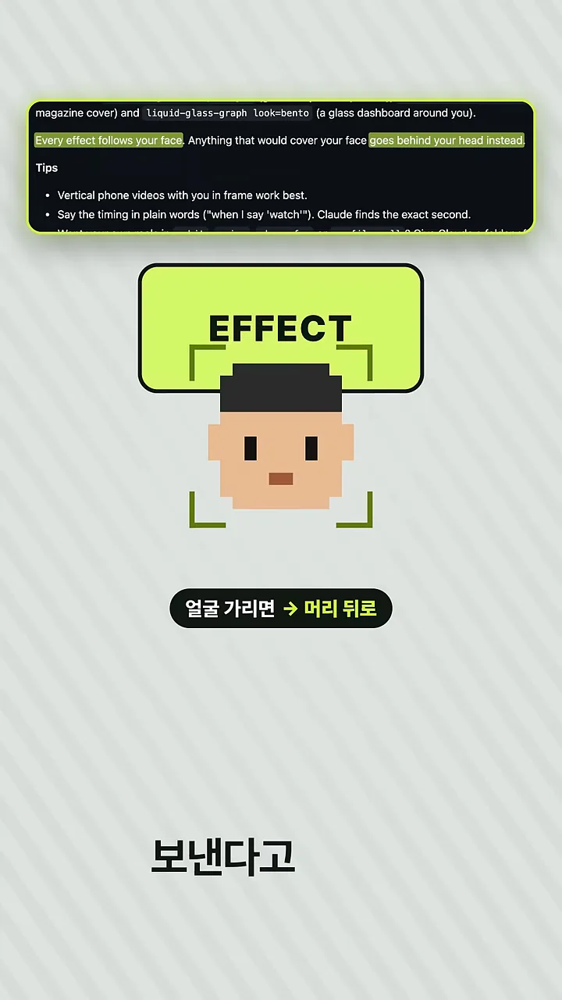
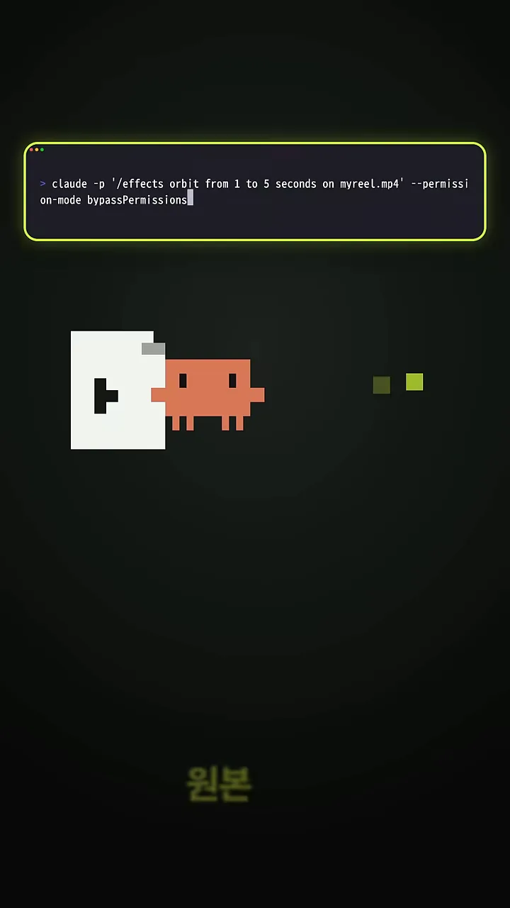
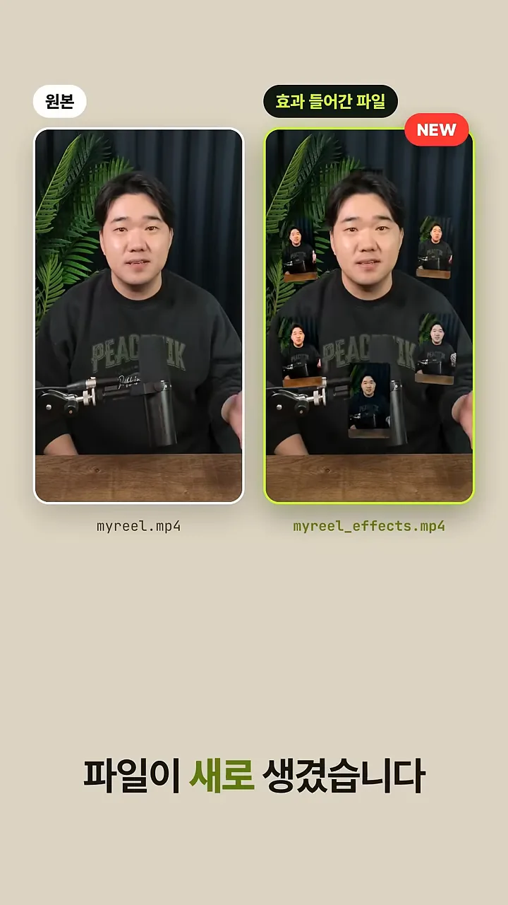
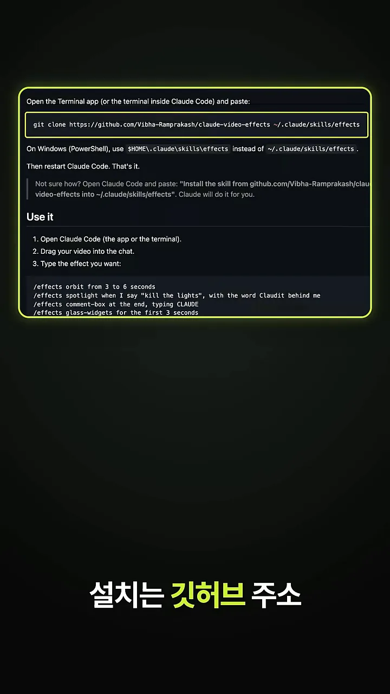
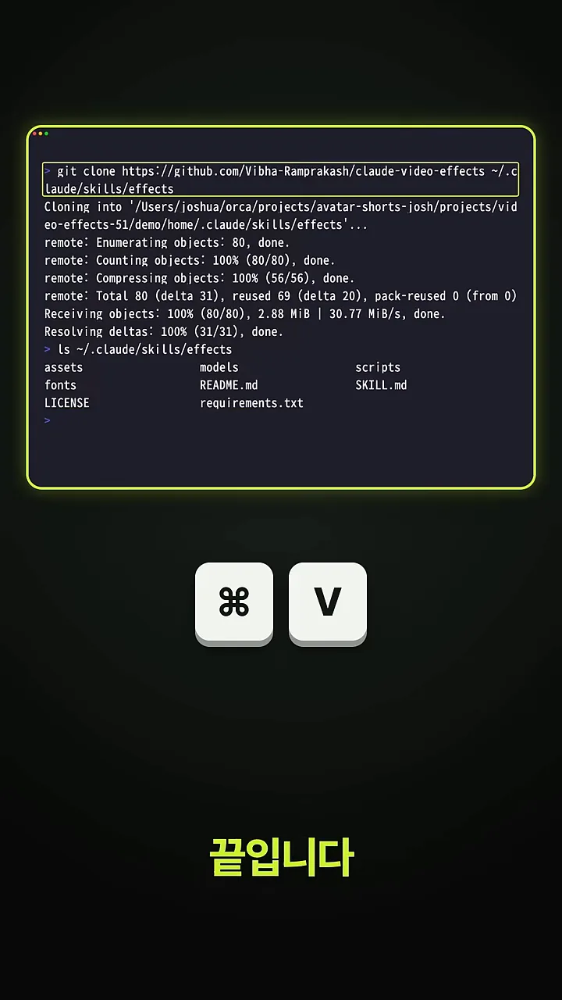

/effects 한 줄로 효과를 넣어요
영상이 소개하는 건 Claude Code에 붙여 쓰는 스킬 하나예요. 내 영상을 넣고 /effects 뒤에 효과 이름만 적으면 릴스용 효과가 들어가요. 영상 첫 장면에서도 왼쪽 세로 영상 옆 터미널에 /effects orbit을 치자, 같은 영상에 작은 화면들이 둘러싼 '효과 완성' 버전이 나와요.
아래는 그 스킬의 깃허브 README예요. 제목은 '51 Free Video Effects for Claude'이고, 첫 문단에서 강조된 부분이 쓰는 법이에요. 영상을 Claude에 넣고 /effects와 효과 이름을 치면 편집이 끝난다고 적혀 있어요. 그 아래 'Made by @vibha.in.progress'가 만든 사람이에요. 발표자가 직접 만든 스킬이 아니라, 공개된 스킬을 써 보고 소개하는 영상이에요.

무료로 풀린 효과는 51가지예요. 화면의 목록은 1번 noise, 2번 lineup, 3번 locked-on처럼 번호와 효과 이름이 세 줄로 이어지고, 51번 fan-build에서 끝나요. 진하게 칠해진 4번 orbit, 7번 spotlight, 11번 todo가 다음 섹션에서 보여 주는 세 가지예요. /effects 뒤에 적는 이름이 바로 이 목록의 이름이에요.

대표 효과 세 가지와 얼굴 추적
영상은 효과 세 개를 차례로 보여 줘요. 화면 아래 표에 README의 한 줄 설명이 같이 나와서, 효과 이름과 하는 일을 짝지어 볼 수 있어요.
| 명령 | 화면에서 하는 일 | README 한 줄 설명 |
|---|---|---|
/effects spotlight | 주변을 어둡게 하고 나만 밝게 남겨요 | Kill the lights, keep you lit |
/effects orbit | 내 릴스 화면들이 머리 주위를 빙글 돌아요 | Your reels circle your head, behind you at the top |
/effects todo | 말하는 동안 옆 체크리스트가 하나씩 체크돼요 | A checklist beside your head that ticks off as you talk |
spotlight는 이름처럼 조명 효과예요. 오른쪽 그림의 초록 조명이 사람 하나만 비추고, 왼쪽 영상은 배경이 어두워진 채 얼굴만 밝아요.

orbit은 왼쪽 영상을 보면 알기 쉬워요. 작은 영상 카드 여러 장이 머리 둘레에 떠 있고, 위쪽 카드는 머리 뒤로 지나가요. 오른쪽 그림의 점선 궤도가 그 움직임을 보여 줘요.

todo는 말하는 흐름에 맞춰 움직여요. 영상 왼쪽 위에 'TODAY' 카드가 뜨고, 오른쪽 체크리스트는 세 칸 중 두 칸까지 체크된 상태예요. 한 칸씩 늘어나는 장면이 이어져요.

얼굴을 가리면 머리 뒤로
세 효과 모두에 깔린 규칙이 하나 있어요. 효과가 얼굴 추적으로 얼굴을 따라가고, 얼굴을 가릴 요소는 알아서 머리 뒤로 보낸다는 거예요. 화면 위쪽 README 문장에서 'Every effect follows your face'와 'goes behind your head instead'가 강조돼 있어요. 아래 그림에선 얼굴 위로 내려오던 'EFFECT' 상자가 머리 뒤로 물러나고, '얼굴 가리면 → 머리 뒤로'라는 설명이 붙어요.

직접 돌려 본 결과와 설치
발표자는 자기 영상으로 직접 돌려 봤어요. 터미널에 친 명령은 아래와 같아요. -p는 대화창을 띄우지 않고 프롬프트 하나만 처리하는 헤드리스 실행이고, 효과 이름 뒤에 '1초부터 5초까지'처럼 구간을 말로 적었어요.
claude -p '/effects orbit from 1 to 5 seconds on myreel.mp4' --permission-mode bypassPermissions
끝나고 나면 원본은 그대로 있고 새 파일이 하나 더 생겨요. 왼쪽 '원본' myreel.mp4는 사람만 있는 화면이고, 오른쪽 '효과 들어간 파일' myreel_effects.mp4에는 머리 둘레로 영상 카드가 떠 있어요. 원본을 덮어쓰지 않으니 마음에 안 들면 다시 돌리면 돼요.

설치는 한 줄
설치는 README의 'Install' 부분에 강조된 한 줄을 터미널에 붙여 넣으면 돼요. 저장소를 ~/.claude/skills/effects 폴더로 받아 오는 명령이에요. 그 아래에 Windows 경로와, Claude Code를 다시 켜면 끝이라는 안내가 있어요. 'Use it'에는 Claude Code를 열고, 영상을 채팅창에 끌어 놓고, 효과를 치는 세 단계가 적혀 있어요.
git clone https://github.com/Vibha-Ramprakash/claude-video-effects ~/.claude/skills/effects
붙여 넣고 나면 clone이 끝나고, ls ~/.claude/skills/effects로 받은 내용을 확인해요. SKILL.md, scripts, models, fonts, assets 같은 폴더와 파일이 보이면 설치가 끝난 거예요.

SKILL.md가 보이면 스킬 폴더가 제자리에 들어간 거예요.
영상 00:29에서 보기